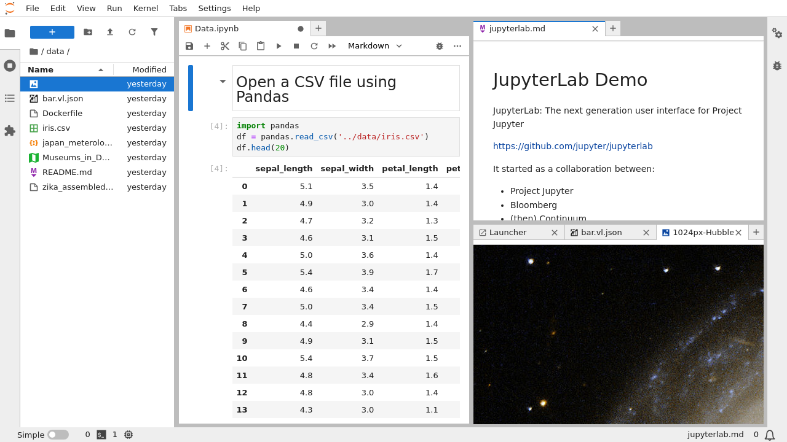

Get Started#
JupyterLab is a next-generation web-based user interface for Project Jupyter.
JupyterLab enables you to work with documents and activities such as Jupyter notebooks, text editors, terminals, and custom components in a flexible, integrated, and extensible manner. For a demonstration of JupyterLab and its features, you can view this video:
You can arrange multiple documents and activities side by side in the work area using tabs and splitters. Documents and activities integrate with each other, enabling new workflows for interactive computing, for example:
Code Consoles provide transient scratchpads for running code interactively, with full support for rich output. A code console can be linked to a notebook kernel as a computation log from the notebook, for example.
Kernel-backed documents enable code in any text file (Markdown, Python, R, LaTeX, etc.) to be run interactively in any Jupyter kernel.
Notebook cell outputs can be mirrored into their own tab, side by side with the notebook, enabling simple dashboards with interactive controls backed by a kernel.
Multiple views of documents with different editors or viewers enable live editing of documents reflected in other viewers. For example, it is easy to have live preview of Markdown, Delimiter-separated Values, or Vega/Vega-Lite documents.
JupyterLab also offers a unified model for viewing and handling data formats. JupyterLab understands many file formats (images, CSV, JSON, Markdown, PDF, Vega, Vega-Lite, etc.) and can also display rich kernel output in these formats. See File and Output Formats for more information.
To navigate the user interface, JupyterLab offers customizable keyboard shortcuts.
JupyterLab extensions can customize or enhance any part of JupyterLab, including new themes, file editors, and custom components.
JupyterLab uses the same notebook document format as the classic Jupyter Notebook.
What will happen to the Classic Notebook?#
As JupyterLab 4 development continues, and Notebook 7 development follows, Notebook 7 will eventually replace the classic Jupyter Notebook. Throughout this transition, the same notebook document format will be supported by both the classic Notebook, Notebook 7 and JupyterLab. As of JupyterLab 4, the Notebook web application, will no longer be installed alongside JupyterLab as it is no longer a JupyterLab dependency. To find out more about the future of the classic Jupyter Notebook in the ecosystem, visit the Jupyter Notebook 7 documentation.
- Installation
- Starting JupyterLab
- Reporting an issue
- Frequently Asked Questions (FAQ)
- JupyterLab Changelog
- v4.3
- v4.2
- v4.1
- v4.0
- 4.3.5
- 4.3.4
- 4.3.3
- 4.3.2
- 4.3.1
- 4.3.0
- 4.3.0rc1
- 4.3.0rc0
- 4.3.0b3
- 4.3.0b2
- 4.3.0b1
- 4.3.0b0
- 4.3.0a2
- 4.3.0a1
- 4.3.0a0
- 4.2.0
- 4.2.0rc0
- 4.2.0b3
- 4.2.0b2
- 4.2.0b1
- 4.2.0b0
- 4.2.0a2
- 4.2.0a1
- 4.2.0a0
- 4.1.2
- 4.1.1
- 4.1.0
- 4.1.0rc1
- 4.1.0rc0
- 4.1.0b2
- 4.1.0b1
- 4.1.0b0
- 4.1.0a4
- 4.1.0a3
- 4.1.0a2
- 4.1.0a1
- 4.0.2
- 4.0.1
- 4.0.0
- 4.0.0rc1
- v3.6
- v3.5
- 3.5.0
- v3.4
- 3.4.7
- 3.4.6
- 3.4.5
- 3.4.4
- 3.4.3
- 3.4.2
- 3.4.1
- 3.4.0rc0
- 3.4.0
- v3.3
- 3.3.4
- 3.3.3
- 3.3.2
- 3.3.1
- 3.3.0
- v3.2
- 3.2.9
- 3.2.8
- 3.2.7
- 3.2.6
- 3.2.5
- 3.2.4
- 3.2.3
- 3.2.2
- 3.2.1
- 3.2.0
- v3.1
- 3.1.19
- 3.1.18
- 3.1.17
- 3.1.16
- 3.1.15
- 3.1.14
- 3.1.13
- 3.1.12
- 3.1.11
- 3.1.10
- 3.1.9
- 3.1.8
- 3.1.7
- 3.1.6
- 3.1.5
- 3.1.2
- 3.1.1
- 3.1.0
- v3.0
- v2.2.x
- v2.2.0
- v2.1.x
- v2.1.0
- v2.0.2
- v2.0.0
- v1.2.0
- v1.1.0
- v1.0.0
- v0.35.0
- v0.34.0
- v0.33.0
- Beta 2 (v0.32.0)
- Beta 1 (v0.31.0)
- v0.30.0
- v0.29.2
- v0.29.0
- v0.28.0
- v0.27.0
- v0.26.0
- v0.25.0
- v0.24.0
- v0.23.0
- v0.22.0
- v0.20.0
- v0.19.0
- v0.18.0
- v0.17.0
- v0.16.0
- JupyterLab Accessibility Statement
- Version lifecycle